3. 始终允许从其他 App 粘贴
第一次运行时，请在系统设置里把“从其他 App 粘贴”设为“允许”。MoonPocket 只会在你主动运行快捷指令导入截图时读取剪贴板中的截图内容，不会持续监听，也不会在后台反复读取。

这一步是为了让快捷指令把截图交给 App。不给权限时，App 无法读取刚刚复制到剪贴板的截图。
用快捷指令把支付截图导入 App，完成识别、确认和保存。当前推荐流程分为以下 3 部分。
按下面顺序添加动作，最后快捷指令里只保留这 3 个动作：截屏、将截屏拷贝至剪贴板、从剪贴板导入截图。
+ 新建。控制，选择 截屏。拷贝至剪贴板，让它拷贝上一步的 截屏 结果。月光钱袋。从剪贴板导入截图。运行时显示。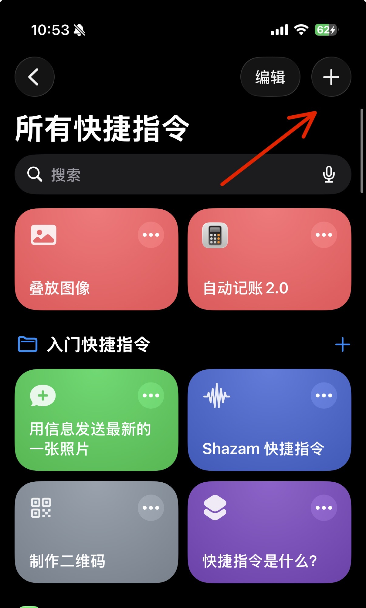
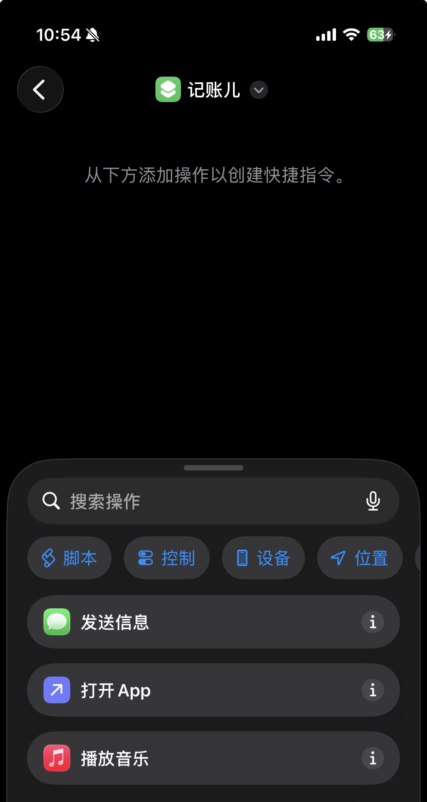
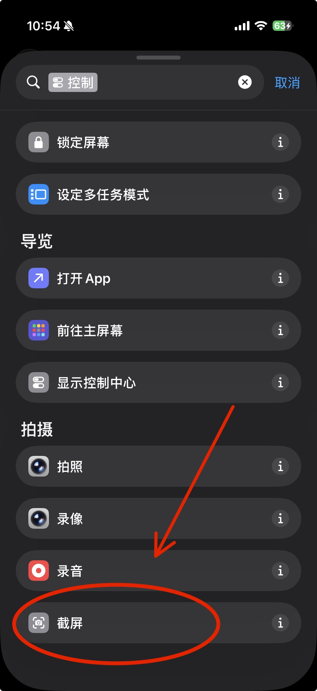
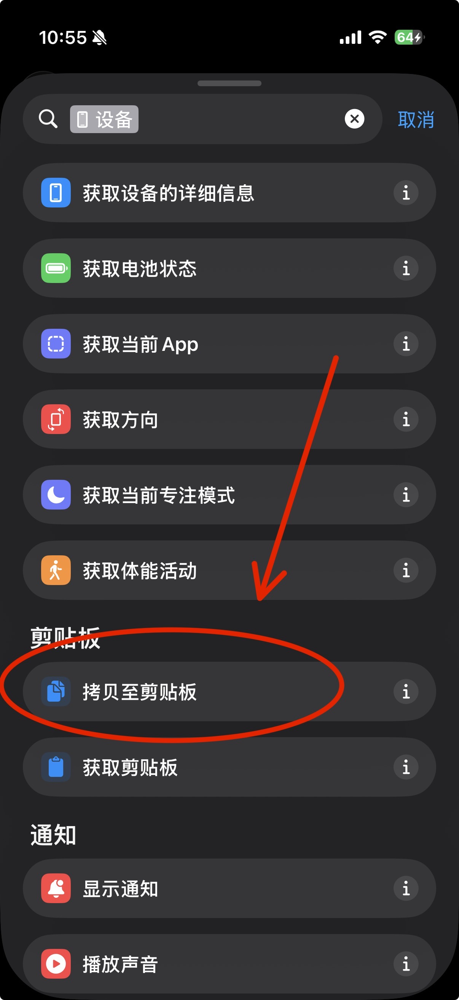
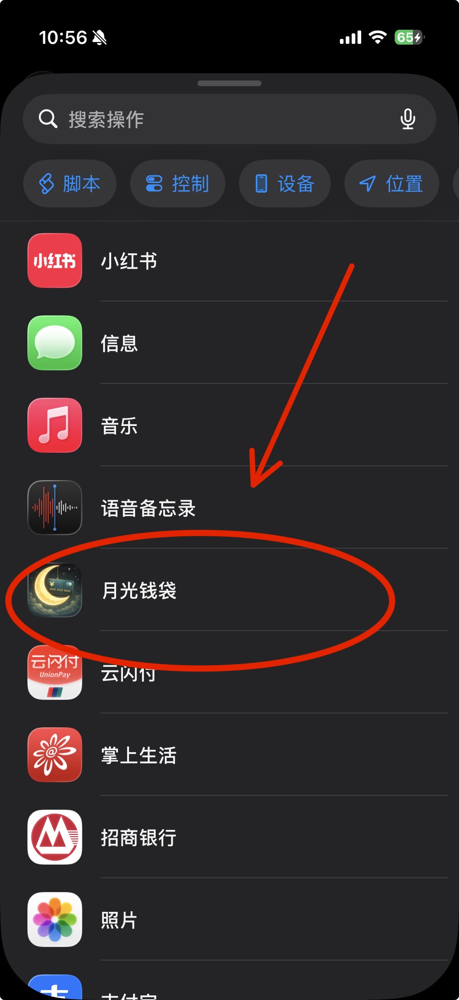
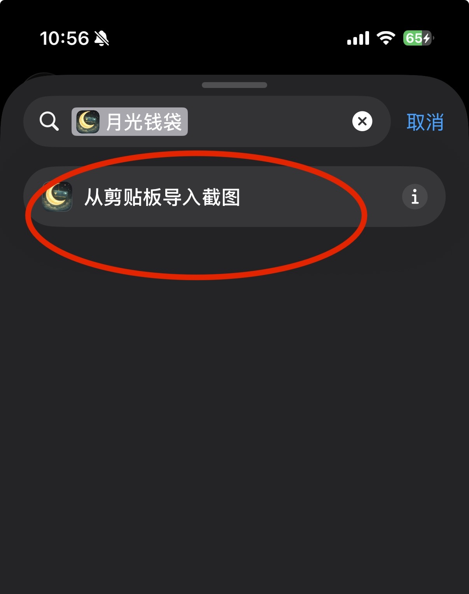
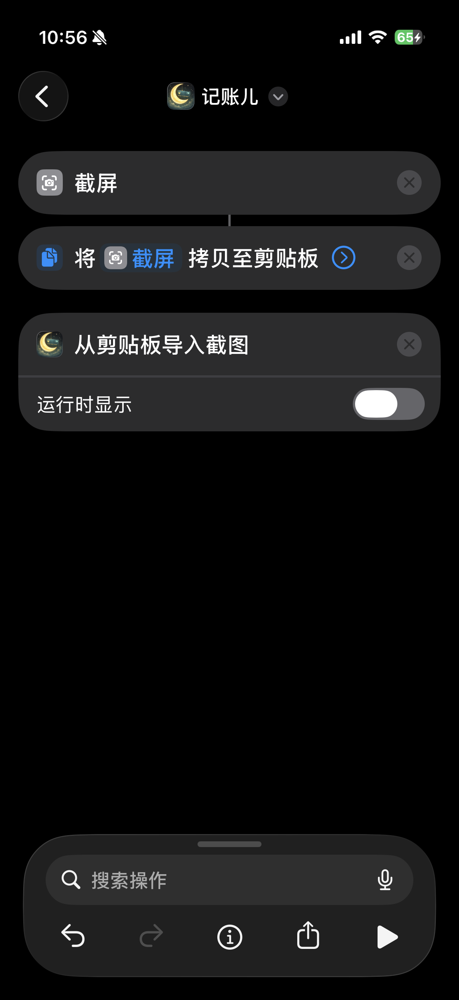
把刚建好的快捷指令绑定到系统“轻点背面”，以后在支付完成页双击手机背面即可运行导入流程。
触控，选择辅助功能里的 触控。轻点背面。轻点两下；如果你习惯三下，也可以改选 轻点三下。记账儿。轻点两下 右侧已显示 记账儿。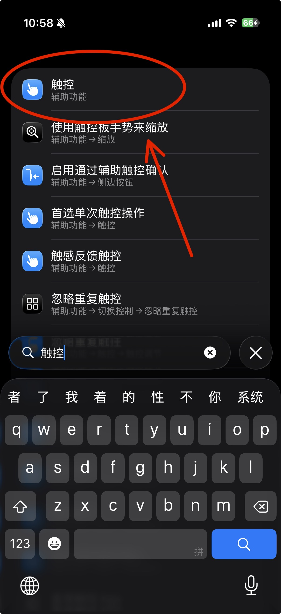
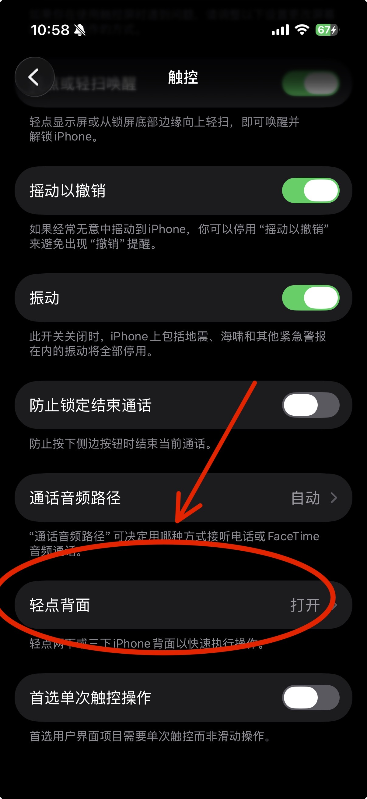
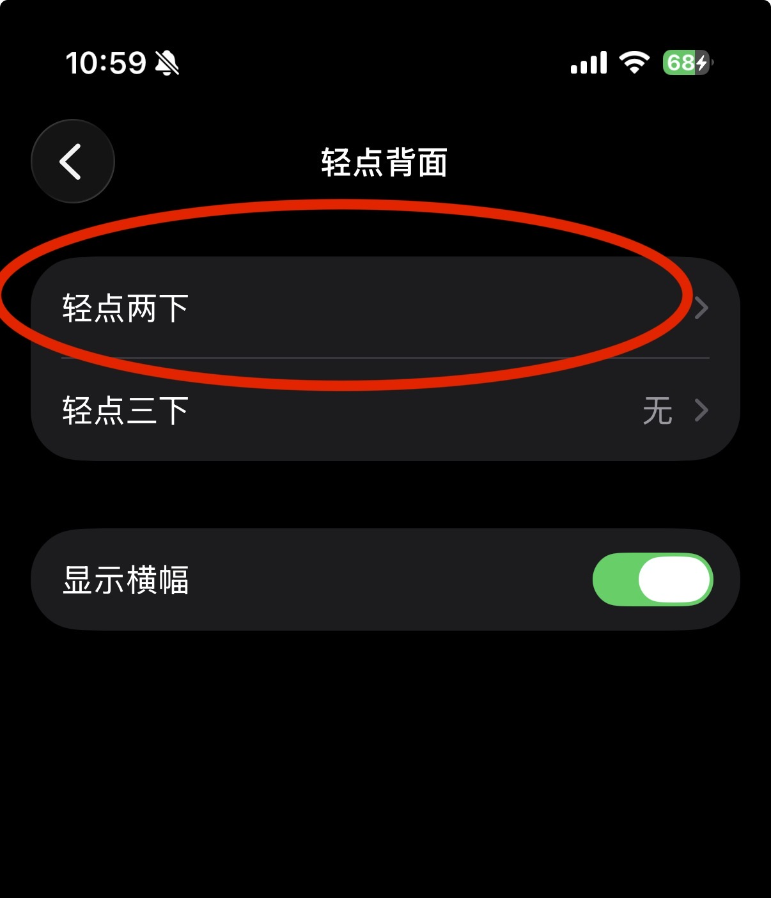
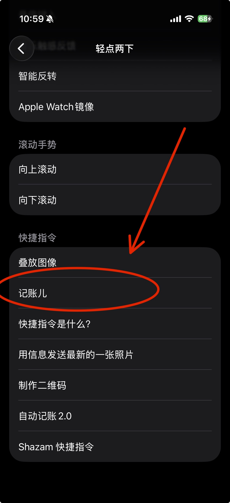
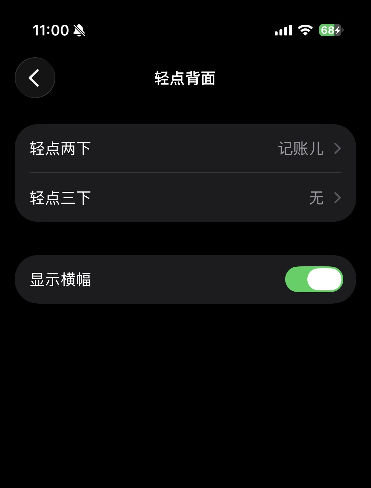
第一次运行时，请在系统设置里把“从其他 App 粘贴”设为“允许”。MoonPocket 只会在你主动运行快捷指令导入截图时读取剪贴板中的截图内容，不会持续监听，也不会在后台反复读取。
Use Shortcuts to send a payment screenshot into the app, then review and save the result. The recommended setup has 3 parts.
Add the actions in this order. The final shortcut should contain only: Take Screenshot, Copy Screenshot to Clipboard, and Import Screenshot from Clipboard.
+ in the top-right corner.Control, then add Take Screenshot.Copy to Clipboard. Its input should be the screenshot.MoonPocket.Import Screenshot from Clipboard.Show When Run for the last action.Bind the shortcut to iOS Back Tap so you can run the import flow by double-tapping the back of your iPhone after payment.
Touch, then choose Touch under Accessibility.Back Tap.Double Tap. You can choose Triple Tap instead if you prefer.记账儿.Double Tap shows the shortcut name.When you run the shortcut for the first time, set “Paste from Other Apps” to “Allow” in iOS settings. MoonPocket reads the clipboard only when you actively run the shortcut to import a screenshot. It does not keep listening or repeatedly read clipboard contents in the background.